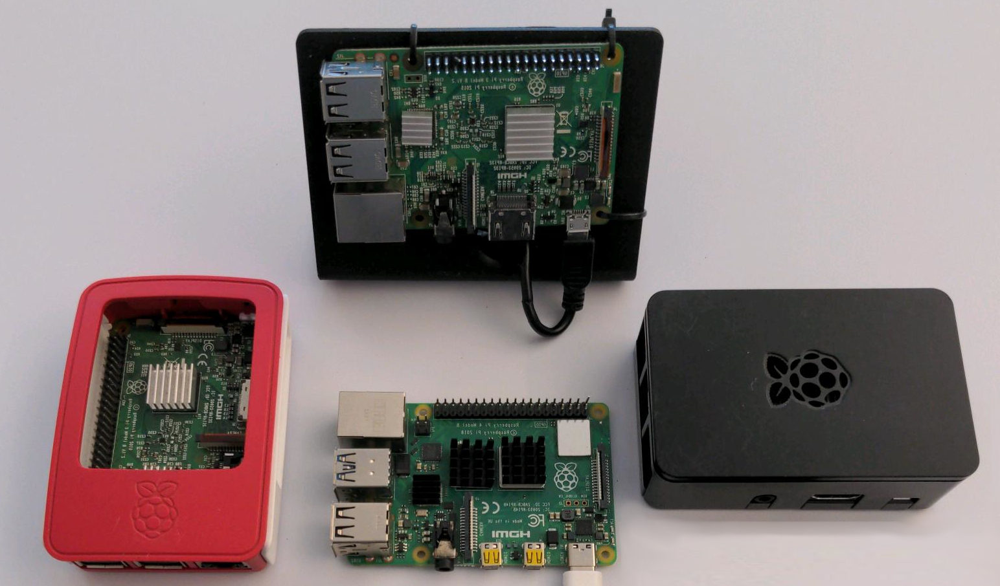
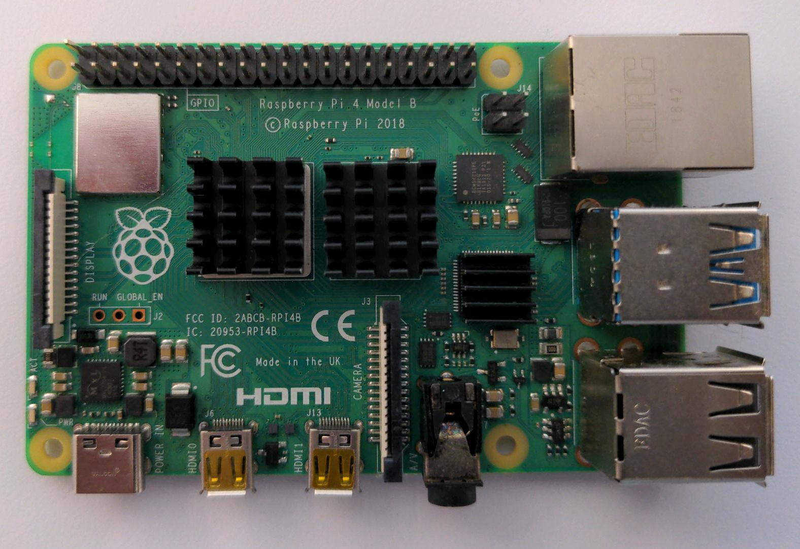
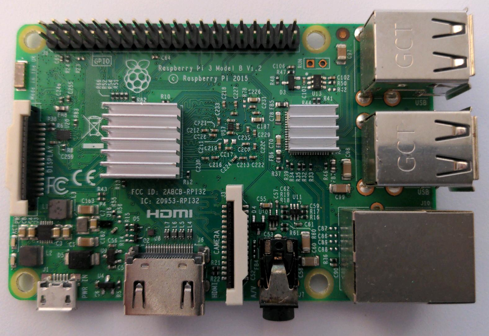

Raspberry Pi models are the most popular Open Source mini-computers in the world and are used by amateur hobbyists and hackers as well as industry professionals in a variety of IoT capacities. They are designed by the Raspberry Pi Foundation. Two targets are of interest to Tari due to their widespread deployment:
Raspberry Pi 4 B: This single-board computer has a 64-bit ARM chipset (arm64 architecture).
Raspberry Pi 3 B+: This single-board computer has a 32-bit ARM hard-float chipset (ARMv7 armhf architecture).

The Raspberry Pi Foundation publishes a detailed git repository with most hardware design files as well as a documentation wiki.
The hardware community around Raspberry Pi is huge and very active all over the Web, such as in the Raspberry Pi Foundation forums.
The Raspberry Pi 4 bootloader is loaded via EEPROM.
Raspberry Pi models ship with a Debian GNU/Linux derivative called Raspbian via the NOOBS installer. Instructions for flashing and updating the OS are available here.
The system starts the Raspbian LXDE desktop environment when it boots. The easiest way to access it is connecting to a display or via the network.
The Tari suite arm64 builds for Ubuntu will run on the Raspberry Pi 4 B with Raspbian.
Some Debian dependencies must be installed:
* Tor must be installed and the control port 9051 will need to be open and configured in /etc/tor/torrc.
* NOTE The Tari suite start_all script requires the GNOME desktop environment. This DE is not recommended on this device so the script should be ignored or modified for Raspbian.
Instructions:
* Download the arm64 build of tari_suite from the Tari downloads page.
* Verify the SHA256 checksum for the file.
* Copy the ZIP archive to the device and extract the files with unzip.
* Change the permissions on the Tari binaries to be executable.
* Run the Tari binaries via the CLI.
Additional installation instructions are available in the Tari project repositories.

The Raspberry Pi Foundation publishes a detailed git repository with most hardware design files as well as a documentation wiki.
The hardware community around Raspberry Pi is huge and very active all over the Web, such as in the Raspberry Pi Foundation forums.
The Raspberry Pi 3 bootloader is loaded via a bootcode.bin file on the boot filesystem (microSD card).
Raspberry Pi models ship with a Debian GNU/Linux derivative called Raspbian via the NOOBS installer. Instructions for flashing and updating the OS are available here.
The system starts the Raspbian LXDE desktop environment when it boots. The easiest way to access it is connecting to a display or via the network.
The Tari project does not provide builds for the armhf architecture, so the Tari suite must be compiled from source on the Raspberry Pi 3.
Instructions for compiling from source are available in the Tari project repositories.
Some Debian dependencies also must to be installed:
* Tor must be installed and the control port 9051 will need to be open and configured in /etc/tor/torrc.
* unzip is required to extract the Tari binaries.
* NOTE The Tari suite start_all script requires the GNOME desktop environment. This DE is not recommended on this device so the script should be ignored or modified for Raspbian.